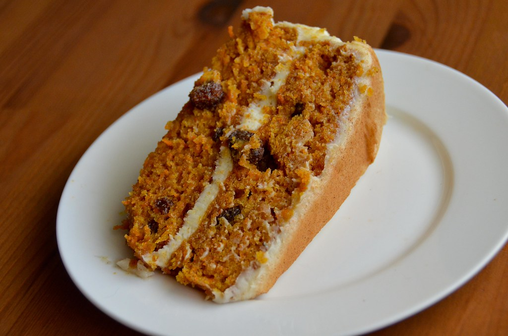

Carrot Cake

Description
Carrot cake is a dessert and type of cake that is made of carrots, flour, eggs, and butter. It is served with tea or coffee.
Ingredients
- 6 cups grated carrots
- 1 cup brown sugar
- 1 cup raisins
- 4 eggs
- 1 ½ cups white sugar
- 1 cup vegetable oil
- 2 teaspoons vanilla extract
- 1 cup crushed pineapple, drained
- 3 cups all-purpose flour
- 4 teaspoons ground cinnamon
- 1 ½ teaspoons baking soda
- 1 teaspoon salt
- 1 cup chopped walnuts
Steps
- Combine grated carrots and brown sugar in a medium bowl. Let sit for 1 hour, then stir in raisins.
- Preheat the oven to 350 degrees F (175 degrees C). Grease and flour two 10-inch round cake pans.
- Beat eggs in a large bowl until light. Gradually beat in white sugar, oil, and vanilla. Stir in pineapple. Combine flour, cinnamon, baking soda, and salt in a separate bowl, then stir into egg mixture until absorbed. Stir in carrot mixture and walnuts. Pour evenly into the prepared pans.
- Bake in the preheated oven until an inserted toothpick comes out clean, 45 to 50 minutes. Cool for 10 minutes before removing cake layers from the pans; let cool completely.
Back to top
Back to main menu